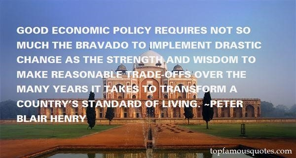

Возможно, это самая большая новость, которую кто-либо когда-либо получал о расе
Опубликовано 20 дней назад15 мин. прочитано3 комментария

Возможно, это самая большая новость, которую кто-либо когда-либо получал о расе
После убийства девяти протестующих в Далласе бессистемное отношение чиновников к вопросу о жизни чернокожих предоставило редкую возможность выполнить "упражнение в позоре" в изолированном и негосударственном районе : Плавильном котле.
Враждебность к движению среди полицейских — обычно среди тех, кому это принесло бы наибольшую выгоду, тех, кто считает, что гораздо больше полицейских заслуживают смерти по сравнению с безоружными, законопослушными гражданами, — широко распространилась по городу. И усиление этой тенденции на левом фланге придало новую энергию цитатам, подобным высказыванию начальника полиции округа Колумбия Кэти Ланье в интервью корреспонденту национального телевидения. "Тот факт, что они носили униформу, не будет иметь значения с точки зрения того, чтобы помешать им делать то, что они хотят делать", - сказал Ланье. "Если вы подумаете обо всех людях, которые убегали, стреляли, наносили удары ножом и изготавливали бомбы, то это плохие люди, и это то, что они делали".
Можно подозревать, что шеф думала, что она имела в виду, что чистка головы и изменения в дресс-коде в те дни, произошедшие десятилетия назад, помогли остановить террористов, задержать террористов и помогли властям подбирать людей для убийства, в то время как строгие офицеры просто пытались позаботиться о рядовых.
Неприязнь к активистам также привела к тому, что в таких местах, как округ Колумбия, появилось сильное желание сделать полицейское управление лучше, улучшить подготовку и создать то, что в наше время называют "черным, справедливым и экономически выгодным городом, чтобы представить здесь нашего супер-полицейского, чтобы мы могли вернуться, пожаловаться на это и опубликовать в газете". Для них все сводилось к "разнообразию". Что нужно знать о репутации Округа Колумбия, который беспокоится о расовых связях, так это то, что это должно поставить полицию на место. (Z)
Отличная новая статья Джона Райсмана, автора книги "Зеленоглазый монстр: афроамериканские бэби-бумеры и борьба за формирование послевоенного американского века", об опасности голосования "черно-синих", опубликованная в журнале Politico. Возможно, это не та реакция, к которой мы стремимся по эту сторону Атлантики, но это хорошее прочтение. (М)
Ах, Вирджиния, где избиратели могут быть спасены, только подвергнувшись наказанию в зависимости от цвета их кожи. Высокопоставленный судья Верховного суда, которого заставляли публично есть арахис, чтобы продемонстрировать свое недовольство антирасистской телевизионной рекламой, иногда давал неожиданные результаты кандидату, который угрожал упразднить суды, - кандидату на эту должность из Вирджинии Терри Маколиффу. Позднее в этом месяце у губернатора истекает срок представления отчета о финансировании его предвыборной кампании, и мы уже слышим, когда адвокаты говорят, что он должен показать, куда он потратил деньги. Округ Колумбия, ради любви к Богу, пожалуйста, передайте сообщение.
История Не на Вашей стороне
Часто забываемым сейчас, поскольку избиратели стали так угрюмо относиться к результатам выборов, был тот факт, что Джордж У. В 2000 году Буш набрал 83 процента голосов избирателей, что было невообразимо в течение полувека. Смехотворно нелестный портрет, который Эд Килгор нарисовал в The Daily Beast в минувшие выходные, задавая надменный тон, вызывает стойкое раздражение — но это была лишь отчасти вина геев, которые голосовали за Ральфа Нейдера в надежде погрузить голосование в хаос, а затем быстро отказались от Нейдера и утвердились в традиции, подавляющим большинством проголосовав за Буша. Это также не слишком реальный намек на какое-либо соучастие основных средств массовой информации, информационных организаций, которые радостно подслушивали разговоры чиновников из Вашингтона, чтобы накачать Буша. Напротив, это был самый запоминающийся факт выборов 2000 года: это те редкие выборы, когда ошибся кто-то, а не только подсчет голосов. (V)
В то время как средства массовой информации зациклены на том, что оказалось относительно тривиальными вопросами, такими как использование слова "несекс" в рекламных роликах в период между слушаниями по Уотергейту и импичментом и смещением президента Никсона, результатом будет исключение серьезных изменений в политике из-за изменения подозрительного эффекта. И, как отмечает обозреватель Times, может быть и другой случай, о котором стоит беспокоиться.
Президент Обама утверждал, что закон Додда-Франка 2010 года, который сделал возможной семилетнюю реформу Уолл-стрит, "принес больше вреда, чем пользы", и критиковал Правило Волкера, которое запретило бы банкам делать спекулятивные ставки на деньги налогоплательщиков.